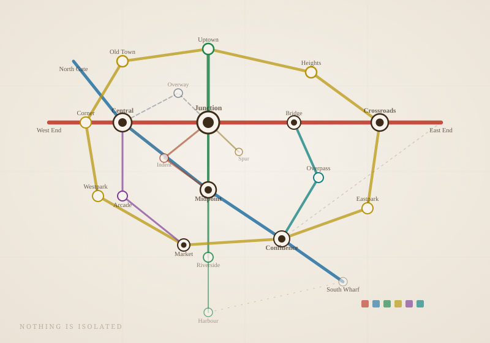
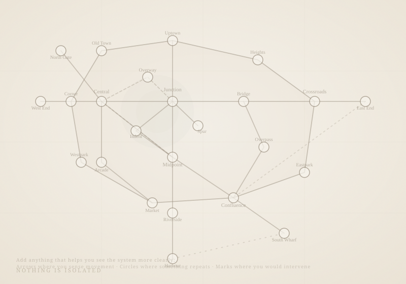

Look Again.
Return to the visual at the beginning. Notice what has shifted in how you see it.

Now notice
What do you see now that you didn't before?
- Where do you now see loops?
- Which parts feel more influential than others?
- Where would you intervene if you had to change it?
Optional but powerful
Make the system visible to yourself.
Now look at this version — colour stripped, structure intact:

Add anything that helps you see the system more clearly:
- Arrows where you sense movement
- Circles where something repeats
- Marks where you would intervene
Print this
visual_blank.svg is print-ready at A4 / A3. Annotate it by hand.
🔁
A final question
Every interface, poster, space, or message you create will push behavior in some direction. What will yours make people do?